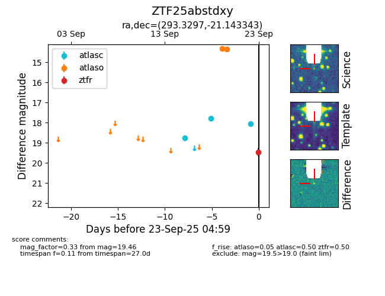

FINK: ZTF25abstdxy
Lasair: ZTF25abstdxy
ALeRCE: ZTF25abstdxy
ZTF25abstdxy (ztf,fink)
equatorial (ra, dec) = (293.3297,-21.14334)
galactic (l, b) = (18.0494,-18.38011)

last atlasc=18.06, atlaso=14.33, ztfr=19.46
3 atlasc, 4 atlaso, 1 ztfr detections